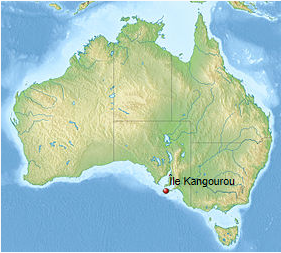
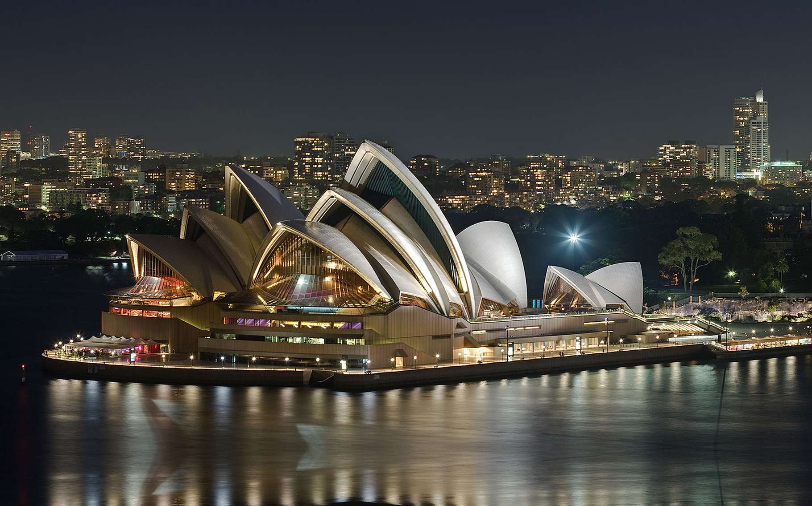

Découvrez l'Australie avec moi
L'ile des Kangourous

Kangaroo Island, ou KI pour les intimes, est la troisième plus grande île d’Australie et ce même si elle ne fait que 150km de long. L’ile se situe dans le sud de l’Australie non loin d’Adelaide. C’est une ile sauvage qui semble peu touchée par le tourisme et qui à elle seule permet de découvrir l’Australie sur un territoire de taille raisonnable avec en bonus de magnifiques paysages, des petites randos sympas et tout plein d’animaux… Bref si vous n’aviez jamais songé à KI, il va maintenant falloir sérieusement y penser.
L’île Kangourou a été séparée du continent australien par une montée du niveau de la mer il y a environ 10 000 ans. Des outils de pierre trouvés sur place laissent à penser que des aborigènes occupaient le territoire il y a au moins 11000 ans; on suppose qu’ils ont disparu 200 ans av. J.-C. Il existe diverses théories sur la cause de leur disparition: maladie, guerre, changements climatiques ou exode. En 1802, l’explorateur anglais Matthew Flinders nomma ce territoire l’île de « kanguroo », après avoir débarqué près de Kangaroo Head, sur la côte Nord de la péninsule de Dudley. Il y rencontra l'explorateur français Nicolas Baudin, qui l'avait quant à lui nommé « île Decrès » en hommage à Denis Decrès. Malgré l'état de guerre entre la France et l'Angleterre, leur rencontre fut amicale. Nicolas Baudin compléta la cartographie de l’île Kangourou, ce qui explique l'existence de certains toponymes en français comme le Cap de Couedic ou la Ravine des Casoars. La plus grande ville de l’île Kangourou est Kingscote, établie à son origine à Reeves Point le 27 juillet 1836 ; elle fut la première colonie européenne d’Australie méridionale.
Le climat sur l'ile
Les hivers, entre juin et septembre, sont doux et humides, les étés sont habituellement chauds et secs. La température moyenne en août (mois le plus froid) se situe entre 13 °C et 16 °C et en février (mois le plus chaud) entre 20 °C et 25 °C. Entre mai et septembre, l'île reçoit les deux tiers de ses précipitations annuelles: 450 mm à Kingscote et 700 mm près du Cap du Couedic. Le mois le plus humide est juillet.
| Tableau climatique de Kingscote | |||||||||||||
|---|---|---|---|---|---|---|---|---|---|---|---|---|---|
| Mois | Jan. | Fév. | Mar. | Avr. | Mai | Jun. | Jui. | Aoü. | Sep. | Oct | Nov. | Déc. | Année |
| Température maximale moyenne (°C) | 23.7 | 23.5 | 22.2 | 19.8 | 17.5 | 15.4 | 15.6 | 15 | 16.5 | 18.5 | 20.5 | 22.3 | 19.1 |
| Température minimale moyenne (°C) | 14.9 | 15.4 | 14.3 | 12.5 | 10.8 | 9.3 | 8.4 | 8.3 | 9.1 | 10.3 | 12.0 | 13.6 | 11.6 |
| Précipitations (mm) | 14.7 | 17. | 18.4 | 35.1 | 58.7 | 72.7 | 77.7 | 65.2 | 47.4 | 37.1 | 23.0 | 19.2 | 483.8 |
| Nombre de jours de pluie moyen | 2.0 | 1.9 | 2.7 | 5.1 | 8.3 | 10.7 | 12.4 | 11.3 | 8.6 | 6.4 | 3.9 | 3.2 | 76.5 |
| Nombre de jours de soleil | 7.7 | 8.2 | 6.8 | 4.8 | 3.8 | 3.4 | 3.9 | 4.1 | 4.3 | 4.6 | 4.6 | 6.0 | 62.1 |
L'Opéra de Sydney

L’opéra de Sydney, à Sydney, est l'un des plus célèbres bâtiments du xxe siècle et un haut-lieu de représentation des arts notamment lyriques. Son architecture originale, qui ressemble à un voilier pour les uns, ou à un coquillage pour les autres, a été imaginée par le Danois Jørn Utzon.
L'Opéra de Sydney accueille environ 1500 spectacles chaque année et abrite cinq théâtres, cinq studios de répétition, deux grands halls d'entrée, quatre restaurants, six bars et de multiples magasins de souvenirs. Les cinq salles ou théâtres sont :
- la grande salle de concert (Concert Hall) : 2 679 sièges. Elle contient le grand orgue de l'Opéra de Sydney, le plus grand orgue mécanique du monde (plus de 10 000 tuyaux) ;
- l'opéra officiellement renommé Joan Sutherland Theatre : 1 547 sièges. C'est lui qui accueille les représentations de l'Opéra d'Australie ;
- la salle de théâtre (Drama Theatre) : 544 sièges ;
- une plus petite salle de théâtre : Playhouse : 398 sièges ;
- le studio de théâtre (The Studio) : 364 sièges.
Le projet de construire l'opéra est né à la fin des années 1940 quand Eugène Goossens, directeur du Conservatoire de musique de l'État de Nouvelles-Galles du Sud fait campagne pour obtenir un lieu adéquat à de grandes productions théâtrales ou musicales. À cette époque, de telles productions se tiennent à la mairie de Sydney, mais celle-ci ne suffit plus. Avant 1954, Eugène Goossens réussit à obtenir le soutien du Premier ministre de l'État, Joseph Cahill, qui commande une étude.
C'est également lui qui insiste pour que le site de Bennelong Point accueille le projet. Joseph Cahill veut au contraire qu'il soit sur ou près de la gare de Wynyard (au nord-ouest du CBD de Sydney).
Le concours international d'architecture du nouvel Opéra de Sydney que lance Joseph Cahill reçoit 233 propositions. En 1955, le jury retient le projet de l'architecte danois Jørn Utzon. Fils d'architecte naval, neveu de sculpteur, Jørn Utzon est inconnu hors de son pays lorsqu'il remporte le concours en 1957. La décision du jury marque la volonté d’adopter une démarche radicalement nouvelle en matière de construction. Jørn Utzon arrive à Sydney en 1957 pour aider à la supervision de son projet.
La construction des arches a été rendue possible par le travail de l'ingénieur français, d'origine corse, Joe Bertony, qui a écrit à cette occasion plus de 30000 équations
Votre guide !

Bien le bonjour !
J'espère que cela vous a tout autant plus que moi !
A la prochaine fois, qui sait !